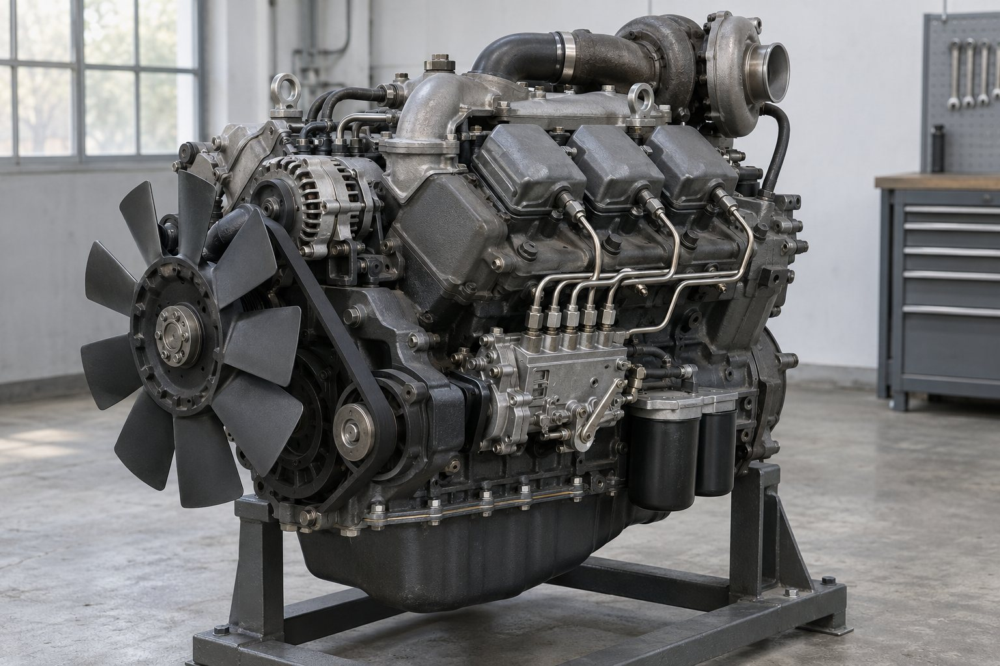

Двигун 5Д20: ремонт та обслуговування.
Для запиту щодо 5Д20 важливо вказати повне маркування та опис завдання.
Підготувати зверненняМодифікацію потрібно уточнити
5Д20Б-300 та 5Д20К-300 наведені як різні виконання. Не варто припускати однакову комплектацію або взаємозамінність деталей без перевірки конкретного двигуна.
Обсяг ремонту, порядок випробувань та наявність деталей визначаються для конкретної модифікації.
Підготовка до звернення
Знайдіть повне маркування й назву техніки. Для ремонту опишіть проблему, а для підбору прокладки чи кільця вкажіть вузол та наявні дані деталі.
Про підбір ущільненьОбговоріть ваше завдання.
Обсяг робіт та умови визначаються після оцінки стану двигуна. У локальній версії можна підготувати текст запиту.
Підготувати зверненняЯк обговорити ремонт 5Д20
Повідомте точне маркування, назву техніки та що саме турбує. За можливості підготуйте фото таблички, відомості про напрацювання й попередні ремонти. Це допоможе визначити наступні кроки для вашого агрегату.
За описом підприємства, ремонт може включати розбирання, очищення, вимірювання деталей, відновлення або заміну несправних компонентів і складання. Склад робіт погоджується після оцінювання двигуна.
Деталі та умови
Для підбору прокладки, гумового кільця чи ремкомплекту потрібні модель і модифікація, вузол та, за наявності, артикул або фото. Сумісність і наявність перевіряються окремо.
Вартість і строк залежать від стану двигуна та потрібних деталей. Умови діагностики, випробувань і гарантії узгоджуються для конкретного замовлення.
Як проходить ремонт ↗